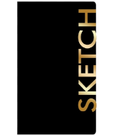

BRANDY
NGUYEN
Life doesn't give us a perfect start, but it is our own choice to make our imperfections into something worth more than gold.
The Artist
Brandy Nguyen
Information About the Artist
![A yellow school building that has red roofing and green shrubbery at the base. The building has three sections in which the middle section is the tallest while the left and right sections are of equal height.
All of the sections have at least four glass pane windows. The middle section has a stone staircase leading up to brown double doors with a clock above whose hands indicate that the time is at the ninth hour.
Clicking on this image will send users down to the school drawings section of the gallery.](images/school.png) Go Down to School Drawings
Go Down to School Drawings

Go Down To Personal Drawings
![A robot cyclops is surrounded by a trio of alien beasts. On the left is a spikey haired monkey with a visor and thorny forearms. On the bottom right is a thorny creature who resembles a canine in which it is on all fours and spike protruding from its face.
Above the spikey dog creature is an ant-spider hybrid that only has a fanged mouth and no eyes on its plated head. The adomen protrudes while its thin yet sharp legs are on the ground. The robot cyclops is wearing a hood and a padded sweater while doing a thumbs-up pose with both hands. One of the cyclops' legs is an exposed mechanical claw while the other is wearing a single shoe.](images/flak-mod.jpg)
Brandy Nguyen
bnguyen11@neiu.edu
CS300 Spring 2023
bnguyen11@neiu.edu
CS300 Spring 2023